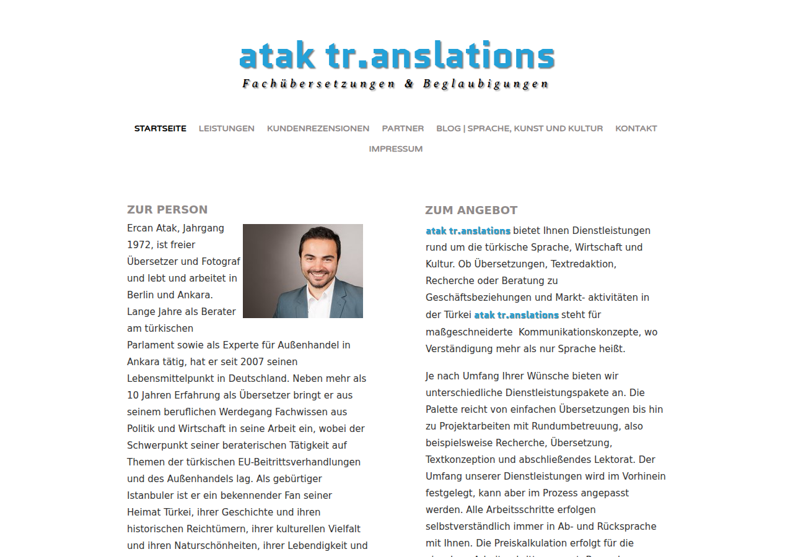

One.com Web Editor · Übersetzungen & Dolmetschen

The blogs in this museum fall silent in 2013. Here is why: I had become a translator and interpreter, and in 2015 my office got what every business got in 2015 — a website, built on One.com's site builder. Version one had my face photo, a services page, customer reviews, and a few links that led nowhere in particular. By 2019, version two had grown up: content completed, Impressum and all.
Then came a third life this museum deliberately does not exhibit: late in 2019 I moved the site onto a WordPress template — Divi, WooCommerce, the works — which I couldn't use properly, for missing developer knowledge. Its test posts and demo shop pages still haunt the archive. That phrase — missing developer knowledge — is the seed of everything in the museum's next wing. The untamed template stood watch until the site ended, silently, in 2023.
The domain found its way back to me and today hosts my developer portfolio. And one thing never stopped: the translating. Of everything in this museum, this is the only exhibit whose business is still open — it just doesn't have a website anymore.
2015: every tradesperson needs a website, and the website builders promise you'll never need a developer. Drag, drop, publish — the personal homepage of 1999 reborn as a business card. It mostly worked, until you wanted more.
Both versions were recovered from Wayback Machine captures (raw bytes, nearest capture per file to each version's anchor). Links that pointed at the site's own domain were re-pointed relatively so the pages browse locally; everything else — including the dummy links of version one — is exactly as captured. The WordPress era was left in the archive, on purpose.